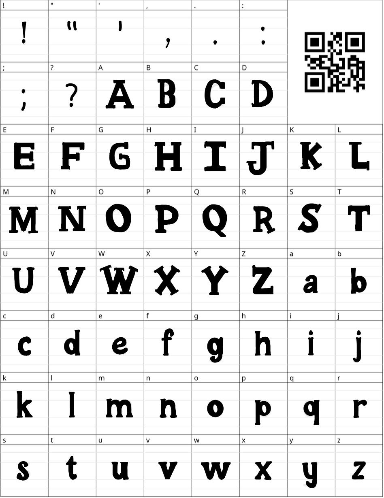
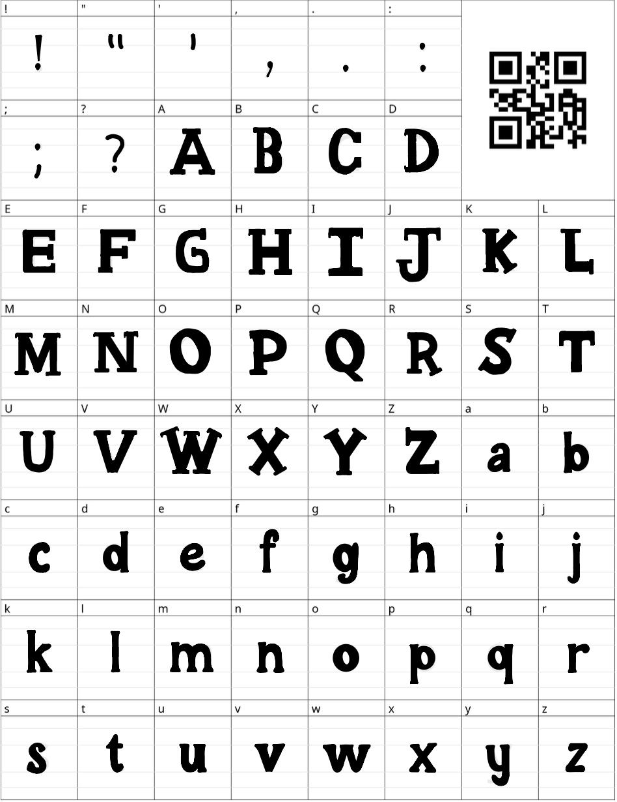

Author: Shivani Gupta and Kayla Vallecillo
Date: January 30, 2025
The George C. Gordon Library at WPI serves as a beacon of
knowledge, a wealth of resources, and a collaborative and safe space for all. Yet its
current visual identity—a medley of bold serif and modern sans-serif typefaces that line the
pages of its printed resources and digital portals to databases and research guides—has left
the library’s role as a hub of WPI’s innovative spirit unshown. The library has therefore
sought a visual reformation which highlights their appreciation for the influence of
typography on the perception of this institutional resource. Kress and van Leeuwen
hypothesized that “in a literate culture the visual means of communication are rational
expressions of cultural meanings, amenable to rational accounts and analysis” (Kress & van
Leeuwen 23). Visual components which compose signs–whether website banners, flyers, or
social media posts–influence viewers’ perception of their content, and in reshaping the
visual rhetoric of the George C. Gordon Library’s written content, their immense role in
shaping this academic community may be subliminally suggested, rather than proven. It is
with an understanding of the influence of visual rhetoric that we embark on a typographic
exploration, one which aims to reflect the library’s credibility, intellectual depth, and
engaging, inviting community. In order to build a typeface which reflects the library’s
values, we’ve planned to combine traditional “academic” typefaces, which utilize serifs and
roman-influenced letterstyle, and more engaging, handmade details which reflect the
collaborative, welcoming nature of this space. Using the digital tool Calligraphr and
iPad-based writing app Notability, we plan to build a font which can be used in social
media, written material, and informal signage for the strategic expression of the George C.
Gordon Library.
As outlined by Kress and Van Leeuwen, visual grammar is centered around the values and
semiotic resources of specific social and cultural groups (Kress & van Leeuwen 8). Our font,
which utilizes visually circular elements, is characterized as a blend between round and
“sharp.” Circles serve as a representation of unity and collaboration, as they have no end,
allowing our font to denote the welcoming and collaborative nature of a library. With
serifs, the font denotes sharpness, which can be viewed as the sharpness of the mind,
denoting the wit and knowledge library holds. Serifs continue to serve as a marker of
knowledge, due to their wide use in academic papers–connoting the credibility of the
library. With what Benton and Gutjahr have described as rhetorical strategy, the practices
of those who create cultural products, we present our font below (Benton & Gutjahr 4).
Benton and Gutjahr additionally provided background on the role of Roman-style typefaces in
cultural and historical contexts in which Roman and italic styles became associated with
secular literary and scientific works (Benton & Gutjahr 11). With its present-day extensions
in academia as the default of respectable written works, we’ve determined that
Roman-inspired serifs and letter structures may provoke an appeal to the library’s
credibility as a respectable intellectual resource. In addition, we aimed to highlight the
centricity of enlightenment and academia in the library’s main function, a choice which can
be reflected in an understanding that “Garamond”-style Roman texts are associated with
Renaissance and scholastic growth (Benton & Gutjahr 9). To further our emphasis on
enlightenment, we included “i’s” and “j’s” which resemble candles and flames, serving as a
symbol of truth and enlightenment. In employing round serifs and academic-style influence,
we aimed to address our purpose in building a font which better reflects this academic
resource.
As described by Benton in her essay “Typography and Gender: Remasculating the Modern Book,”
typographic reformist movements which formed in the late nineteenth century in England and
America expressed frustration towards “feminized” aesthetics of contemporary books (Benton &
Gutjahr 71). These aesthetics involved “hairline” serifs, variation in each letter’s
structural thickness, and increased space to prompt easier reading and a “lighter” page.
With an understanding of how typography has been gendered in the past, we’ve discussed that
these reformist opinions fail to ground themselves in truth and are founded upon misogynist
and elitist views on who may engage thoughtfully in academia. Our font aims to combat this
historical typographic taste, which has transcended into present-day intellectual texts
(Benton & Gutjahr 93). We’ve combined thickness variation and bold serifs, organic and
angular details, and increased space within and between letters to extend traditional
academic styles with a “feminine” twist. We aim to combat the elitist historical fears which
emerged as reading was popularized by mechanical printing presses by aiming to create a
readable, engaging, and inviting font. We’ve combined bold, readable text, with minute
details to prompt curiosity from all readers alike. While our font is unpolished and
handmade, we hope to create a product which can modernize the sharpness of academia with an
invitation to read, explore, and collaborate. In the future, we hope to utilize these
principles and understandings of visual rhetoric to create a refined and expressive font.
Works Cited:
Kress, G., & Van Leeuwen, T. Reading Images: The Grammar of Visual Design (3rd ed.).
Routledge, 2021. pp. 1-23.
Gutjahr, Paul C., & Megan L. Benton.Illuminating Letters: Typography & Literary
Interpretation. Edited by Paul C. Gutjahr & Megan L. Benton. U of Massachusetts P,
2001, pp.
1-93.
 
